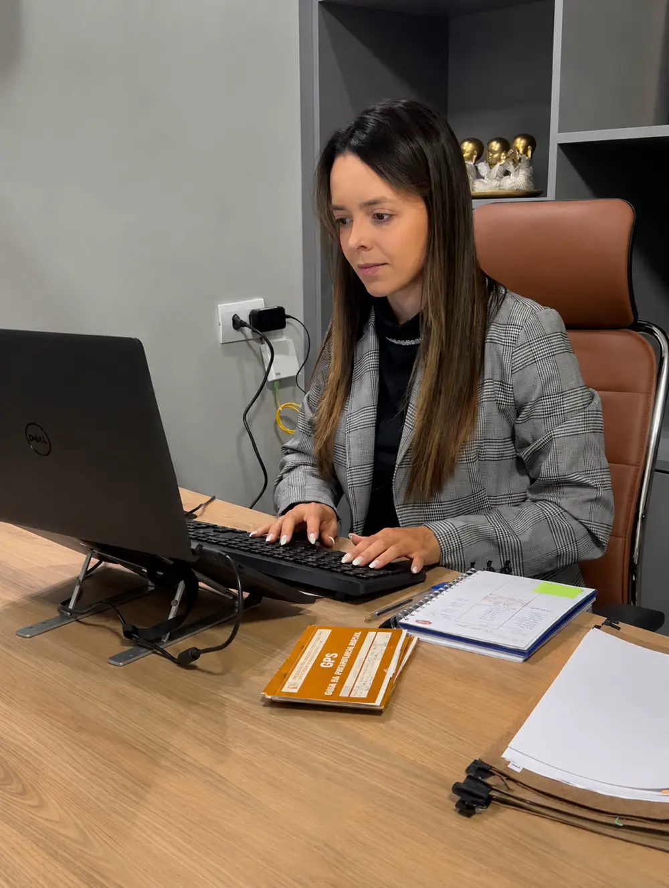

Alta indevida, cessação sem aviso, benefício suspenso: cada situação tem um caminho. Analiso o seu caso e te digo com clareza o próximo passo.
Sem promessa de resultado, sem número mágico. O que fica é o cuidado com quem chega em um momento difícil.
"O INSS havia negado meu auxílio e eu me sentia perdida. A Dra. Analaury analisou meu caso, explicou cada passo com calma e me ajudou a entender o que estava acontecendo. Nunca me senti desamparada no processo."
"Tive meu benefício suspenso enquanto ainda fazia tratamento. Fui atendida pela Dra. Analaury pelo WhatsApp e ela foi extremamente atenciosa. Sempre me manteve informada e reuniu os documentos com muito cuidado."
"Antes de dar entrada no INSS, procurei orientação. A Dra. Analaury analisou meu histórico de contribuições com muita atenção, respondeu cada dúvida sem pressa e me deu segurança pra tomar a decisão certa."
"Quando o INSS cortou meu auxílio sem aviso, fiquei desesperada. A Dra. Analaury me recebeu com muita paciência, ouviu minha situação até o fim e explicou tudo em linguagem que eu entendi. Recomendo pela humanidade dela."
"Fui na perícia sem saber o que esperar. A Dra. Analaury me preparou com antecedência, me disse o que levar e o que dizer. Nunca imaginei que uma advogada pudesse ser tão acessível."
"O INSS negou meu pedido e eu já estava desistindo. Foi a Dra. Analaury quem me mostrou que ainda havia caminho. Ela não pintou milagre, foi honesta sobre as chances, e isso me deu confiança pra seguir."
"Cheguei à Dra. Analaury por indicação. Fui atendido pelo WhatsApp e a distância nunca foi problema. Sempre que tive dúvida ela respondeu no mesmo dia. Profissional muito atenciosa e clara."
"Recebi alta antes da hora, sem estar em condições de trabalhar. A Dra. Analaury analisou meu caso e explicou os caminhos possíveis com muita paciência. Nunca me senti julgada pelas minhas dúvidas, mesmo sendo leiga."
"Estava afastado e não sabia como conduzir o pedido de prorrogação. A Dra. Analaury me orientou de forma clara e sempre acessível. Ela é uma pessoa que se importa de verdade com quem chega até ela."
Depoimentos publicados com autorização. Conteúdo meramente informativo, sem garantia de resultado — em conformidade com o Provimento nº 205/2021 da OAB.
Não é só "entrar com processo". Cada ação que eu faço tem uma consequência direta pra você — veja como se conectam:
Sem juridiquês e sem você se sentir perdido. Você sabe, em cada momento, onde o seu processo está e qual é o próximo passo.
Você me conta a sua situação pelo WhatsApp ou presencialmente. Essa primeira escuta é sem compromisso e serve para entender o que você precisa.
Reúno o seu CNIS, laudos e comprovantes e estudo o seu histórico de contribuições para identificar, com precisão, qual é o seu direito.
Apresento a você, em linguagem clara, os caminhos possíveis (administrativo ou judicial), os prazos realistas e as condições antes de qualquer passo.
Conduzo o seu processo e mantenho você informado em cada movimentação, até a decisão. Você nunca fica sem resposta.
Cada situação tem um caminho jurídico próprio. Encontre a sua na lista abaixo.
Você está doente e ainda não deu entrada no INSS.
Seu auxílio foi indeferido. Na maioria das vezes, dá pra reverter.
Você estava recebendo e o INSS cessou o benefício de repente.
Quando a incapacidade pra trabalhar não tem previsão de melhora.
Quem procura um advogado previdenciário, na maioria das vezes, está cansado de filas, de negativas do INSS e de explicações que ninguém entende. O meu trabalho começa exatamente aí: ouvir a sua história com calma e traduzir o jurídico para uma linguagem que faça sentido para você.
Cada caso é analisado individualmente, com base nos seus documentos e no seu histórico de contribuições. Não trabalho com promessas de resultado, trabalho com clareza sobre o seu direito, sobre os caminhos possíveis e sobre o que esperar em cada etapa.
O escritório atende presencialmente em Tupaciguara/MG e remotamente em toda a região, sempre com o mesmo cuidado: você acompanhado de perto, do primeiro contato à decisão final.

Mais do que prometer resultado, eu me comprometo com a forma como o seu caso é tratado.
Toda mensagem é respondida. Você é informado sobre cada movimentação do seu processo, sem precisar cobrar.
Eu digo o que é possível e o que não é. Sem criar expectativa de algo que o seu caso não permite.
Explico o seu direito de um jeito que você entende, para você decidir com segurança e tranquilidade.
Em regra, quem contribui para o INSS, cumpriu a carência mínima (normalmente 12 contribuições, com exceções previstas em lei) e está incapacitado para o trabalho habitual por mais de 15 dias em razão de doença ou acidente. Cada caso tem suas particularidades, e só uma análise dos seus documentos responde com precisão.
Uma negativa administrativa não é o fim do caminho. Existem duas alternativas principais: recurso administrativo dentro do próprio INSS ou ação judicial. O primeiro passo é analisar a carta de indeferimento para entender o motivo da negativa e escolher o caminho mais adequado ao seu caso.
O prazo legal do INSS para dar resposta ao pedido administrativo é de 45 dias, mas na prática varia conforme a agência e a agenda de perícias. Se o pedido for negado e for necessário recurso ou ação judicial, o prazo é maior. Não dá pra prometer uma data, mas dá pra manter você acompanhado em cada etapa.
Não. A consulta inicial é gratuita. É o momento em que a Dra. escuta seu caso, analisa os pontos principais e te explica os próximos passos. Se você decidir seguir com o processo, os honorários são combinados de forma transparente e por escrito.
Sim. O escritório atende presencialmente em Tupaciguara/MG e de forma remota (por WhatsApp e videochamada) em toda a região, incluindo Uberlândia e cidades vizinhas. Você escolhe o formato que for mais confortável.
Existem duas frentes: o restabelecimento administrativo (pedir ao próprio INSS a revisão da cessação) e a contestação judicial. O caminho depende do motivo do corte, do tempo desde a cessação e da documentação médica que você tem. O primeiro passo é analisar o motivo alegado pelo INSS e o seu quadro clínico atual.
Se você discorda da alta médica do INSS, existem prazos e caminhos jurídicos específicos pra contestar. Um deles é o pedido de prorrogação (PP), que precisa ser feito nos últimos 15 dias antes da cessação. Se o prazo passou, ainda dá pra recorrer administrativamente ou pela via judicial, dependendo do caso. O importante é agir logo pra não perder direitos.
A prorrogação é o pedido pra estender o benefício antes que ele termine, quando você ainda está incapaz pra trabalhar. Deve ser solicitado nos 15 dias antes da alta programada. Se o pedido for feito com base médica sólida, o INSS pode manter o benefício sem interrupção. Se for indeferido, ainda cabem outros caminhos.
É simples: você fala com a gente no WhatsApp, agendamos a consulta inicial gratuita, a Dra. Analaury analisa o seu caso e te apresenta o plano. Se você decidir seguir, formalizamos o contrato e damos entrada no que for necessário. Sem compromisso na conversa inicial.
Me conte a sua situação pelo WhatsApp. A consulta inicial é gratuita e sem compromisso.
Recuperar meu benefício